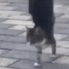

"살려줏메"
"살려줏메"
A
i
도적이 되고 싶은 자는 나에게..

도적고양이;
"포기해라"
저거 구해줄라고 손 가져다대는 순간 지 떨어진다고 온갖 난리를 치면서 발톱으로 난장판을 피워놓을거
핑크색 젤리 존나귀엽네
나의 능력을 보아라
항아리 배ㅋㅋ

세 명이 오리라

공중에 매달린 구멍... 비켜봐
잘 빨아서 널어놨네
손에 검은콩이 있네
도적이 되고 싶은 자는 나에게...
나는 박쥐다 나는 배트맨
"뭐해? 살려줘."
귀엽당
두려워말라
엘리베이터에 끼인 여자
순서 지킬것. 이상.